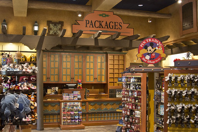
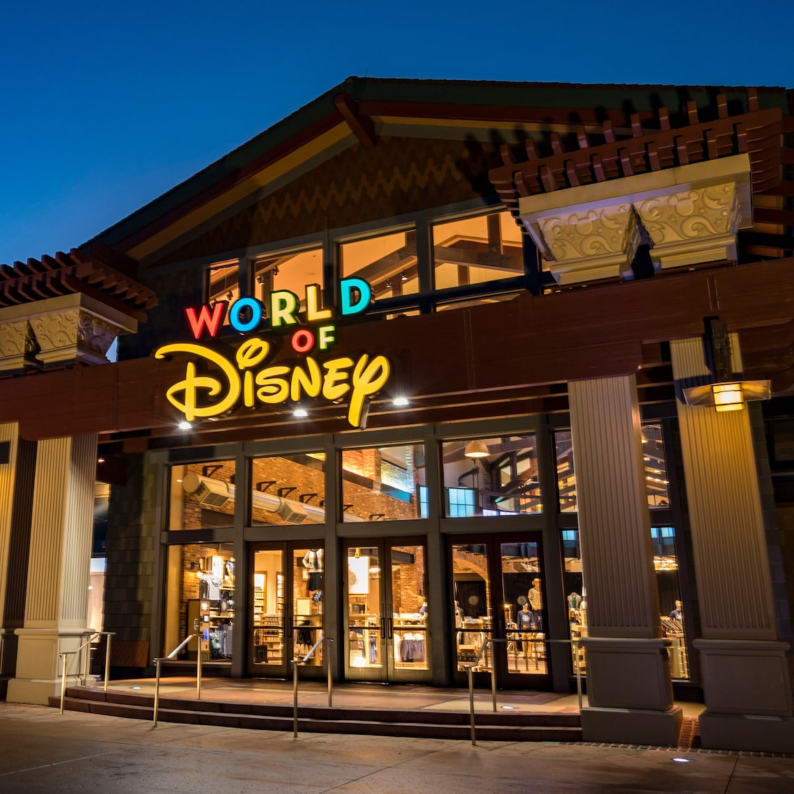
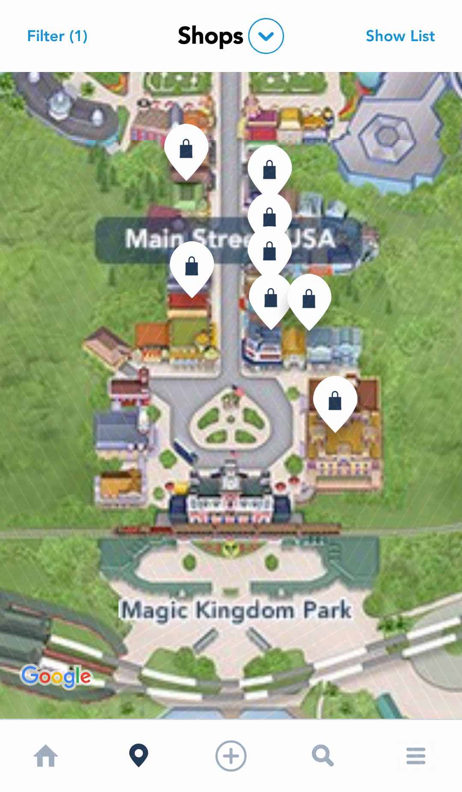

By Valentina
02 Ottobre 2020
Se c’è una cosa che non manca al Disney world Resort, sono i negozi di souvenir, in gergo: gift-shops. Alcuni sono abbastanza generici ed offrono prodotti come come i classici peluches e magliette (questi sono di solito nelle lobby degli hotel e nelle vie più trafficate dei parchi), altri invece offrono una gamma di prodotti più particolari, come addirittura cristalli Swarovski a forma di personaggi Disney o arredi per la casa assolutamente unici.
Come fare ad orientarsi nello shopping a Disney World, senza togliere troppo tempo alle altre attivitá? Ecco alcuni suggerimenti sullo shopping a Walt Disney World che potrebbero aiutarvi!
Non tutti i negozi hanno le stesse cose: quando lo vedi, compralo!
Nonostante gli innumerevoli negozi per lo shopping, non è molto raro veder qualcosa che vi piace, una maglietta o un particolare gadget in un negozio e non essere più in grado di trovarlo in altri negozi. Questo succede soprattutto quando siete dentro i parchi: vedete qualcosa di carino, posticipate l’acquisto, e poi passate ore a girare per negozi a Disney Springs o negli altri parchi per ritrovarlo. Il mio consiglio è di comprare quello che vi piace, quando lo trovate. Uno dei vantaggi di essere nella “bolla” Disney è che i prezzi per merci e prodotti sono costanti in tutti i negozi - salvo rarissime eccezioni, non troverete differenze tra un negozio a Disney Springs e uno a Magic Kingdom. Per questo motivo, se siete convinti dell’acquisto, non c’è nessuno motivo per aspettare: ne salverete in tempo prezioso!
Non portare con te i tuoi acquisti
NOTA: A causa della pandemia, Disney ha temporaneamente sospeso - o limitato - il servizio qui descritto. Ho deciso di includerlo lo stesso perchè tornerà sicuramente ed è di grande aiuto!
Il mio secondo consiglio si lega al primo e vale per lo shopping dentro i parchi.
Ora che state per acquistare quel peluche formato gigante di Mickey Mouse che vi piace tanto, un pensiero vi ferma: “dovrò portarlo con me tutto il giorno!”. Sbagliato! Disney ha pensato anche a questo: ecco il “Package Pickup Service”.
Se alloggi in un Resort Disney:

Immagine di John, licenza Creative Commons 2.0
Alla cassa, puoi chiedere al cast member di fare arrivare il tuo acquisto direttamente al tuo Resort, compilando un semplice formulario.
Il tuo acquisto verrà recapitato in una precisa location - di solito all’interno del negozio di souvenir or al front-desk del tuo Resort: presentando la tua ricevuta, potrai ritirare i tuoi acquisti.
Anche alcune locations a Disney Springs offrono questo servizio, che è totalmente gratuito.
NOTA: Potrai ritirare i tuoi acquisti dalla location del tuo hotel solo a partire dalle ore 15 del giorno dopo - sconsigliato negli ultimi giorni della tua vacanza!
Se alloggi fuori Disney World:
Anche per i visitatori giornalieri, Disney ha pensato ad una soluzione. Se infatti non alloggi in uno dei resort Disney, potrai far spedire i tuoi acquisti in una location vicino all’ingresso del parco che stai visitando.
Quando sei alla cassa del negozio, puoi chiedere del “Package Pickup Service”. Il cast member ti farà compilare un formulario e ti farà trovare i tuoi acquisti, alla fine della giornata, in un punto prestabilito del parco, appunto vicino all’uscita. Anche questo servizio è gratuito.
NOTA: Potrai ritirare i tuoi acquisti nella location stabilita a partire da tre ore dopo l’acquisto: se hai intenzione di passare solamente poche ore nel parco, o la giornata sta già finendo, questo servizio non fa al caso tuo.
Disney ha anche un servizio di spedizione degli acquisti direttamente a casa dei suoi ospiti, ma al momento non è chiaro se questo servizio sia offerto anche verso indirizzi internazionali.
Poco tempo? Vai sul sicuro!

Sapevi che a Disney Springs puoi trovare il più grande negozio Disney del mondo? Non per nulla lo hanno chiamato World of Disney! Se la tua vacanza sta volgendo al termine e hai poco tempo per i tuoi ultimi acquisti, World of Disney è la destinazione per andare a colpo sicuro e trovare la più grande gamma di prodotto Disney che magari hai già visto in altro gift shops in giro per Disney World.
Questo negozio è davvero immenso (e a volte molto affollato), dunque calcola almeno un paio d’ore per fare i tuoi acquisti!
Usa l’app!

Sappiamo già che l’app ufficiale di Walt Disney World, My Disney Experience è utile per un sacco di cose: ma sapevi che puoi usarla anche per lo shopping? La mappa dei parchi all'interno dell’app infatti ti segnala la posizione di tutti i gift-shop aperti e ti offre anche una piccola descrizione di cosa potrai trovare al loro interno. Utile quando hai un po’ di tempo tra un FastPass+ e l’altro!
Psss...lo sapevi che My Disney Experience ti dice anche la posizione di tutti i bagni dentro i parchi? Tienila sempre a portata di mano!
Vuoi fare shopping risparmiando qualche $$$?
Se ha un’auto a disposizione e puoi spostarti fuori dalla bolla Disney, ci sono due indirizzi che dovresti segnarti: quelli dei due Outlet Disney, poco distanti dai parchi.
In questi due negozi troverai tutto il merchandise Disney (magari di qualche mese fa) a prezzi molto più scontati che non a Disney World! Entrambi questi negozi sono dentro centri commerciali specializzati in merce scontata, non solo Disney. Se avete mezza giornata libera e qualche dollaro extra, sicuramente una visita consigliata. Ecco i due indirizzi:
Character Warehouse-Orlando Premium Outlet
Suite 1252, 8200 Vineland Ave., Orlando, FL 32821
Character Warehouse-Orlando Premium Outlet
4969 International Dr., Orlando, FL 32819
Hai altri consigli legati allo shopping a DisneyWorld? Fammeli sapere via Social media (Twitter, Instagram) o mandami una mail!
_ _ _
Se quest’articolo è stato interessante, non dimenticarti di seguirci sul podcast “Aperitivo a Main Street, U.S.A.”, disponibile su Spotify, Anchor e tutte le altre maggiori piattaforme audio!